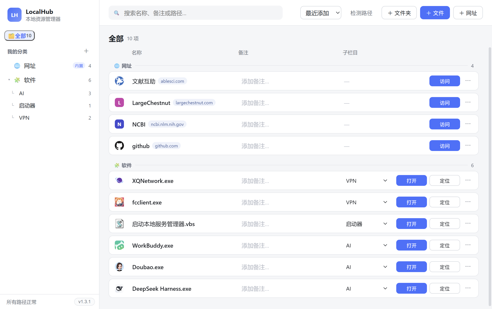
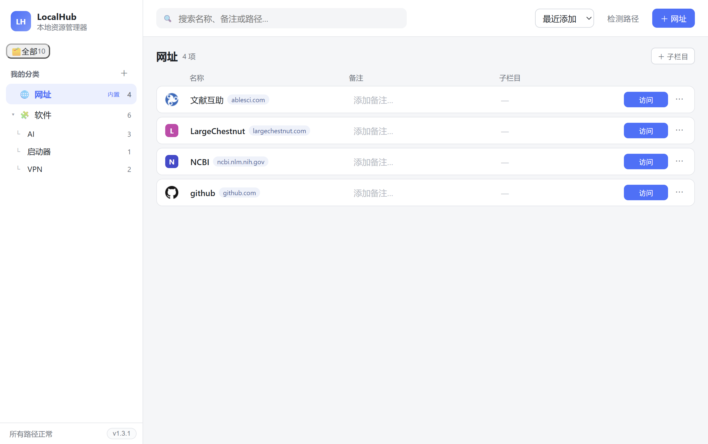
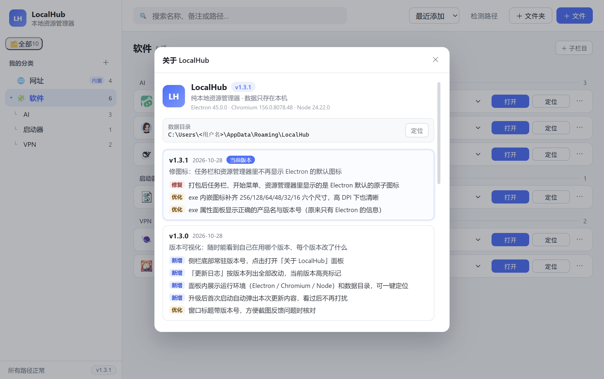

LocalHub 是一个纯本地运行的 Windows 资源管理器。硬盘深处的绿色软件、桌面上一堆快捷方式、 收藏夹里那几十个常用网站，都可以放进同一张表里——一条目一行，点一下就打开。
不做启动器，不做文件搜索。只解决一件事：你知道自己要用的东西就在这儿，一眼能找到。
「软件」下面再分「AI 工具」「影音」，「文件」下面再分「文档」「素材」。层级随你定，随时改名或调整。
本地程序和常用网站不再分两处存放。装的是 exe，收的是链接，都在同一个列表里，按钮会自己变成「打开」或「访问」。
直接解析 exe / dll 的 PE 资源，取出程序自带的图标，而不是系统给的白纸方块；网址自动抓 favicon，抓不到就用域名首字母配彩色徽标。
从资源管理器拖文件或文件夹，从浏览器拖链接，松手即添加到当前分类。不用点「添加」再翻一遍目录。
启动时扫一遍全部路径。被移动或删掉的条目会标红并禁用按钮，不会等你点下去才发现打不开。
按钮走「打开中… → ✓ 已打开 / ✕ 失败」四态，失败时底部提示条给出具体原因，按钮宽度固定不会左右跳动。
左边分类，右边清单。没有花哨动效，信息密度优先。



下载 LocalHub-1.3.1-Setup.exe 双击安装。不想装也可以直接用便携版，解压即运行。
先建「软件」，再把常用的 exe 从资源管理器拖进去。图标会自动读取，不用手动配。
「打开」直接启动程序，「定位」跳到它所在的文件夹。常用的网址拖进来，点「访问」用默认浏览器打开。
首次启动会看到一个空列表。软件不会扫描你的硬盘，所有条目都是你自己添加的，
数据保存在 %APPDATA%\LocalHub\data.json，卸载重装也不会丢。
软件内「关于」面板里的同一份记录，升级后首次启动会自动弹出本次更新内容。
修图标：任务栏和资源管理器里不再显示 Electron 的默认图标
版本可视化：随时能看到自己在用哪个版本、每个版本改了什么
操作反馈：点完按钮立刻知道有没有成功
网址管理：常用网站也收进同一个列表
首个可用版本：把散落各处的软件和文件收进一张表
全部数据存在本机 %APPDATA%\LocalHub\data.json，图标缓存放在同目录的 icon-cache 里。软件没有任何联网同步逻辑，唯一会发起的网络请求是抓取网址条目的 favicon——而且抓到后就本地缓存，不会重复请求。
因为它内置了完整的 Chromium 与 Node 运行时（Electron）。好处是不依赖系统里的任何组件，装了就能跑；代价就是体积。这是所有 Electron 桌面应用的共同特点。
安装包没有做代码签名证书。个人项目申请证书的成本较高，所以 SmartScreen 会拦一下——点「更多信息 → 仍要运行」即可。源码全部公开，介意的话可以自己构建。
可以。克隆仓库后 npm install，开发模式 npm run dev，打包 npm run dist:manual。构建需要 Node 22+，产物在 out/ 目录。